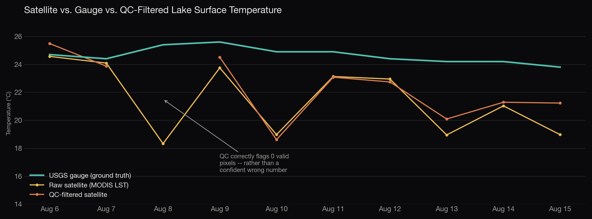
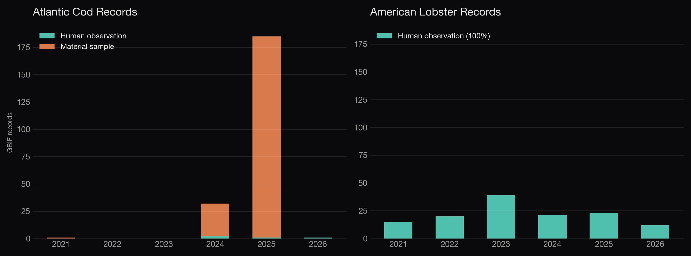
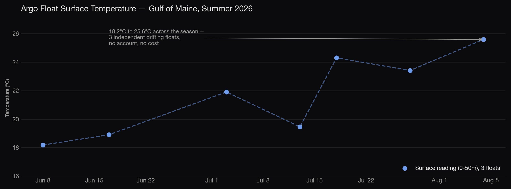

A self-built research pipeline fusing NASA satellite data, a USGS gauge, drifting ocean floats, and species-occurrence records — free tools only, no trial accounts — built to ask what a genuinely merged dataset reveals about a warming lake and the ocean beside it. The two most promising-looking signals in it both turned out to be something other than what they first appeared.

Situation
A tournament-fishing platform side project sparked an interest in NASA's free satellite data — but that platform is a commercial, freshwater-only product, not a sandbox for open-ended exploration. ThermalScout became that sandbox instead: a standalone project to see what a genuinely fused dataset — satellite, in-situ gauge, drifting ocean float, and biodiversity records, spanning both a lake and the ocean beside it — actually reveals, kept deliberately separate from any commercial codebase.
Complication
Every source in a stack like this comes with a hypothesis attached that sounds right until it's actually checked. Standard practice says filtering satellite readings by their own quality flags should make them trustworthy. Ordinary intuition says a biodiversity database's occurrence counts should track real environmental change. Both are the kind of assumption that quietly becomes "settled" the moment you stop at the first result that looks like it confirms them.
Question
What actually survives when each hypothesis is checked against a second, independent source — not computed once and reported, but pressure-tested the way a real finding has to be?
Answer
Two research threads, each pushed past the first plausible-looking result:
MATERIAL_SAMPLE data, the signature of one research survey publishing to the database, not a change in the ocean. American lobster's records, by contrast, were 100% direct observation across all six years and showed no such artifact.
Same database, same region, same six years — one species' record is a reporting artifact, the other's isn't. Raw occurrence counts are dominated by survey effort until you check, a known problem in biodiversity data that this project's own numbers reproduced concretely rather than just cited.

Not every source needed a caveat. Three independent drifting floats — free, no account, oceanography's own gold standard — show a clean, physically sensible seasonal warming signature with no correction required.
Built with